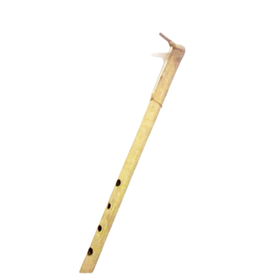

Kalimantan Tengah

Gambar diatas adalah Suling Balawung, cara memainkan Suling Balawung adalah dengan ditiup. Suling ini dimainkan oleh wanita yang menetap di Sungai Katingan. Suling Balawung dibuat menggunakan bambu dan memiliki 5 lubang di bagian badan dan 1 lubang di bagian atas untuk suara do, re, mi, fa, sol, la